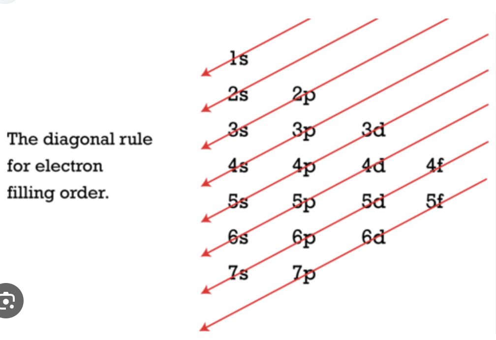

ATOMIC STRUCTURE : HOW TO DO ELECTRONIC CONFIGURATION
YOUTUBE PLAYLIST LINK
ALL TOPICS IN THE PLAYLIST :
- Cathode Ray || Rutherford Alpha particle scattering experiment
- Bohr’s Atomic Model
- Atomic Spectrum || Hydrogen Spectrum
- De Broglie Wavelength || Heisenberg’s Uncertainty Principle
- Quantum Number’s || Pauli’s Exclusion Principle
- Aufbau’s Principle || Rules for filling electrons
- Hund’s Rule for Maximum Multiplicity
- How to do Electronic Configuration
HOW TO DO ELECTRONIC CONFIGURATION
YOUTUBE LECTURE LINK
TOPICS IN THIS LECTURE :
- Goal and prerequisites: Aufbau + Hund (00:05)
- Filling order \(1s \rightarrow 4s \rightarrow 3d\) (00:44)
- Capacity rules: s, p, d, f (01:54)
- Z = 1–10: H to Ne with orbital filling logic (02:28)
- Hund’s rule in p-subshell: C, N, O patterns (03:50)
- Z = 11–20: Na to Ca, start of 4s (05:43)
- Z = 21–30 baseline pattern: Sc to Zn (07:14)
- Exceptions + stability: Cr and Cu (07:54)
-
-
Target: write electronic configurations up to atomic number 30
using two ideas:
- Aufbau principle (energy-based filling order)
- Hund’s rule (distribution of electrons within degenerate orbitals)
-
Target: write electronic configurations up to atomic number 30
using two ideas:
-
-
Standard order used up to \(Z=30\):
\(1s,\,2s,\,2p,\,3s,\,3p,\,4s,\,3d,\,4p,\,5s,\dots\) - Practical reminder: fill lower-energy subshells first; after \(3p\), \(4s\) fills before \(3d\).

-
Standard order used up to \(Z=30\):
-
-
Maximum electrons per subshell:
- \(s\): \(2\)
- \(p\): \(6\)
- \(d\): \(10\)
- \(f\): \(14\)
-
Orbital count inside subshells:
- \(s\): 1 orbital
- \(p\): 3 orbitals
- \(d\): 5 orbitals
- \(f\): 7 orbitals
-
Maximum electrons per subshell:
-
-
Use the filling order + capacities to write configurations:
- \(H\) (\(Z=1\)): \(1s^1\)
- \(He\) (\(Z=2\)): \(1s^2\)
- \(Li\) (\(Z=3\)): \(1s^2\,2s^1\)
- \(Be\) (\(Z=4\)): \(1s^2\,2s^2\)
- \(Ne\) (\(Z=10\)): \(1s^2\,2s^2\,2p^6\)
-
Orbital diagram convention:
- Paired electrons in one orbital must have opposite spins.
- \(p\)-subshell has three separate orbitals to be filled using Hund’s rule.
-
Use the filling order + capacities to write configurations:
-
-
Hund’s rule (for degenerate orbitals like \(2p\)): maximize
unpaired electrons first.
- Place one electron in each orbital with parallel spins before pairing starts.
-
Key examples:
- \(C\) (\(Z=6\)): \(1s^2\,2s^2\,2p^2\) → two unpaired electrons in two different \(p\) orbitals.
- \(N\) (\(Z=7\)): \(1s^2\,2s^2\,2p^3\) → three unpaired electrons (one in each \(p\) orbital).
- \(O\) (\(Z=8\)): \(1s^2\,2s^2\,2p^4\) → after three singles, the 4th electron pairs in one orbital.
-
Hund’s rule (for degenerate orbitals like \(2p\)): maximize
unpaired electrons first.
-
-
After \(Ne\), electrons enter \(3s\) then \(3p\):
- \(Na\) (\(Z=11\)): \(1s^2\,2s^2\,2p^6\,3s^1\)
- \(Mg\) (\(Z=12\)): \(1s^2\,2s^2\,2p^6\,3s^2\)
-
\(3p\) filling (pattern continues up to \(Ar\)):
- \(Al\) (\(Z=13\)): \(\dots\,3s^2\,3p^1\)
- \(Si\) (\(Z=14\)): \(\dots\,3s^2\,3p^2\)
- \(Ar\) (\(Z=18\)): \(\dots\,3s^2\,3p^6\)
-
After \(Ar\), \(4s\) opens:
- \(K\) (\(Z=19\)): \(\dots\,4s^1\)
- \(Ca\) (\(Z=20\)): \(\dots\,4s^2\)
-
After \(Ne\), electrons enter \(3s\) then \(3p\):
-
-
After \(Ca\), electrons start entering \(3d\) while \(4s\) is
already occupied:
- \(Sc\) (\(Z=21\)): \([Ar]\,4s^2\,3d^1\)
- \(Ti\) (\(Z=22\)): \([Ar]\,4s^2\,3d^2\)
- \(V\) (\(Z=23\)): \([Ar]\,4s^2\,3d^3\)
- General idea (before exceptions): increase \(3d\) count stepwise while \(4s\) stays \(4s^2\).
-
After \(Ca\), electrons start entering \(3d\) while \(4s\) is
already occupied:
-
- Observation (from experimental energy ordering): some configurations shift one electron from \(4s\) to \(3d\) to gain extra stability.
-
Stability keywords used:
- Half-filled subshell (all orbitals singly occupied) is relatively stable.
- Fully filled subshell is relatively stable.
-
Chromium (\(Z=24\)) exception:
- Expected: \([Ar]\,4s^2\,3d^4\)
- Actual: \([Ar]\,4s^1\,3d^5\)
-
Copper (\(Z=29\)) exception:
- Expected: \([Ar]\,4s^2\,3d^9\)
- Actual: \([Ar]\,4s^1\,3d^{10}\)
-
Zinc (\(Z=30\)) (no exception here):
- \([Ar]\,4s^2\,3d^{10}\)